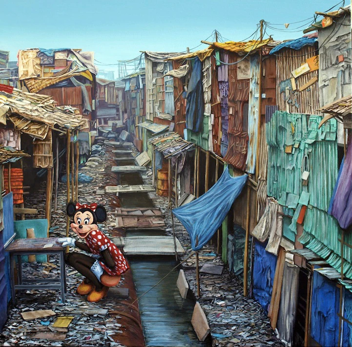

Disposable Waste
Disposable waste is one of the most visible ways everyday habits affect the environment. In the United States, the average person throws away around five pounds of trash each day, which adds up to roughly 1,800 pounds every year. Much of this waste comes from single-use products such as packaging, food containers, and household items that are used briefly and then discarded. The calculator below provides a simple way to estimate how much waste you generate in a day. While it cannot capture every source of trash, it helps illustrate how small daily actions scale into large amounts of waste over time.
Interactive Waste Calculator
Adjust the sliders to estimate how your weekly habits contribute to CO₂ and landfill waste.
Weekly Inputs
Your Estimated Impact
Landfill waste: 0 kg/week
Factors used (per-unit averages based on lifecycle studies):
Takeout meal ≈ 0.20 kg CO₂e / 0.01 kg waste
Package delivery ≈ 0.75 kg CO₂e / 1.50 kg waste
Plastic bottle ≈ 0.08 kg CO₂e / 0.02 kg waste
Plastic grocery bag ≈ 1.58 kg CO₂e / 0.02 kg waste
The values for each were taken from estimates by:
Pure Planet Club
Consumer Ecology
Union College/Hallie Katman
CO2 Everything
Discussion
Using only the options above, the average person emits 12kgs of CO2e and produces around 4kg of waste a week. It is important to note that these are, overall, not the largest contributors to CO2e emissions by the average person. The average American produces 16 metric tons of CO2e a year, which averages to about 300kg CO2e a week. However, these are some of the easiest things for us to change. Cooking more at home, trying to pick things up more often, and removing plastic water bottles and bags are simple changes we can apply.
"Shadow City Minnie" by Jeff Gillette

Jeff Gillette is an American artist based in California. He is known best for his artwork that combines rampant
consumerism and dystopian imagery. He worked with Banksy and a team of artists for Banksy's Dismaland exhibition. I
recommend looking up the exhibition for yourself, as it features many types of beautifully crafted artwork. This piece was
not part of that exhibition. One of the reasons I picked this piece from his collection is because of how uncanny Minnie
looks. Viewing his other pieces, his renditions of Disney characters is far more cartoonish. This Minnie is so human-like
and it is quite disturbing. She is living in these slums made of trash. The buildings are made of many different bright
colors. All of this trash was made and discarded. If that trash had been made with purpose it never would have made it here.
Maybe, instead of being wasted, those materials would have been able to be used as something more stable. Maybe these people
would have a real home instead of one made from scraps. My favorite small detail is the bridges made of real doors. These
homes have no real use for them, and the wood is likely much worse than the metal, so they have used them for bridges instead.
All of it is quite sickening. I recommend looking at more of Gillette's pieces. They are all quite surreal, but intriguing.